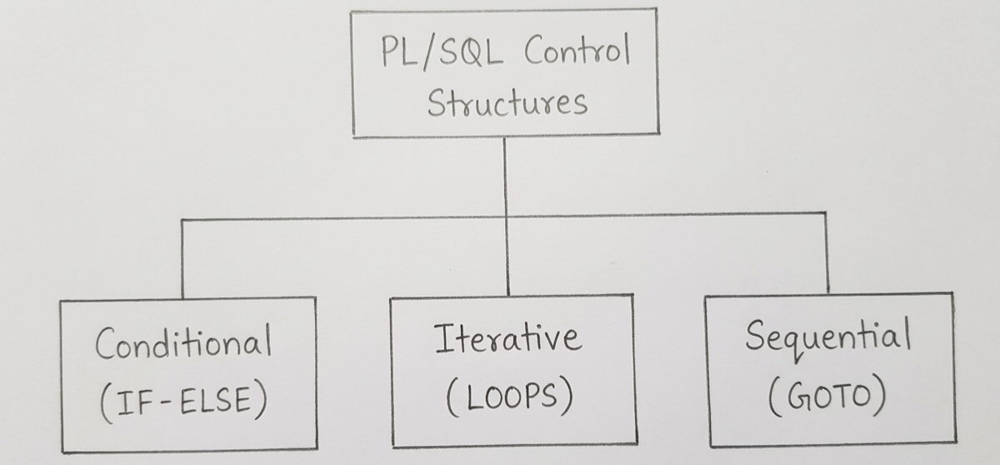

Q28. Inspect the Basics of PL/SQL and Its Various Control Structures with Examples.
1. PL/SQL
PL/SQL (Procedural Language/Structured Query Language) is an extension of SQL developed by Oracle.
It combines SQL with programming features such as variables, conditions, loops, and exception handling.
2. Basic Structure of PL/SQL
A PL/SQL program contains the following parts:
- DECLARE: Used to declare variables (optional).
- BEGIN: Contains statements to be executed (mandatory).
- EXCEPTION: Handles errors during execution (optional).
- END: Marks the end of the PL/SQL block (mandatory).
Example:
DECLARE
num NUMBER := 10;
BEGIN
DBMS_OUTPUT.PUT_LINE(num);
END;
/Output: 10
3. Control Structures in PL/SQL
Control structures are used to control the order in which statements are executed.

a) Conditional Control Structure (IF-ELSE)
Executes statements based on a condition.
DECLARE
marks NUMBER := 60;
BEGIN
IF marks >= 40 THEN
DBMS_OUTPUT.PUT_LINE('Pass');
ELSE
DBMS_OUTPUT.PUT_LINE('Fail');
END IF;
END;
/Output: Pass
b) Iterative Control Structure (Loops)
Repeats statements multiple times.
PL/SQL supports three types of loops:
- Simple LOOP: Repeats until an EXIT condition is satisfied.
- WHILE LOOP: Repeats while a condition is true.
- FOR LOOP: Repeats for a specified range of values.
Example (FOR LOOP):
BEGIN
FOR i IN 1..3 LOOP
DBMS_OUTPUT.PUT_LINE(i);
END LOOP;
END;
/Output:
1
2
3c) Sequential Control Structure (GOTO)
Transfers program control to a labeled statement.
BEGIN
GOTO display_msg;
<<display_msg>>
DBMS_OUTPUT.PUT_LINE('Hello');
END;
/Output: Hello